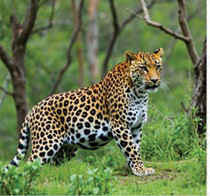
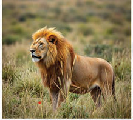
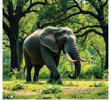
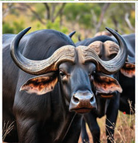
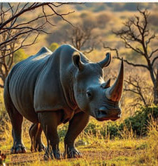

inasimamia hifadhi za taifa zote, eneo la uhifadhi la Ngorongoro linasimamiwa na Mamlaka ya eneo la uhifadhi la Ngorongoro (NCAA). Mapori tengefu kama vile; Ugalla, Moyowosi, Rungwa, Biharamulo, Ibanda, na Selous yanasimamiwa na mamlaka ya usimamizi wa wanyamapori Tanzania (TAWA). Wanyamapori ni rasilimali muhimu kwa taifa kwani wanachangia maendeleo ya nchi kwa njia mbalimbali kama vile; utalii, elimu ya wanyama, utamaduni na urithi wa taifa pamoja na uvunaji wa wanyama.





Kielelezo namba 2: Wanyama wajulikanao kama “The big five”
Nishati
Tanzania ina rasilimali mbalimbali za nishati, zile jadidifu na zisizo jadidifu. Nchi inategemea zaidi nishati za maji, gesi asilia, na biomasi katika uzalishaji wa nishati. Nishati za maji zinachangia sehemu kubwa ya umeme unaozalishwa, ingawa uzalishaji wake unaweza kuathiriwa na ukame. Hifadhi za gesi asilia hasa maeneo ya mwambao wa pwani zimekuwa chanzo kikubwa cha nishati kwa uzalishaji wa umeme na matumizi ya viwandani. Biomasi hasa itokanayo na miti na mabaki ya kilimo hutumika sana kwa kupikia hasa katika maeneo ya vijijini. Aidha, Tanzania ina vyanzo vya nishati jadidifu kama vile upepo na jua ambazo zinasaidia kupunguza utegemezi wa mafuta, gesi asilia na umeme wa maji.
Kwa ujumla, rasilimali asilia za Tanzania zina mchango mkubwa kwa uchumi wa Tanzania kupitia sekta za kilimo, madini, utalii, na viwanda. Serikali inaendelea kutekeleza mikakati ya kuhakikisha matumizi endelevu ya rasilimali hizi kwa manufaa ya vizazi vya sasa na vijavyo.